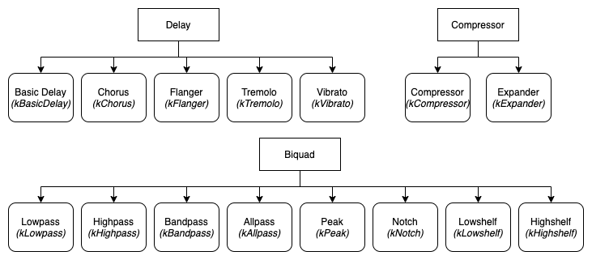

- Generated by
 1.8.18
1.8.18
|
Audio Effects Framework
|
Cross platform C++ library with low-latency audio effects processing algorithms designed for real-time audio processing.
The Doxygen documentation can be accessed here: http://rishikeshdaoo.github.io/AudioEffectsFramework
This project aims to provide an easy to use API for creating audio effects processing applications. With well documented, low-level implementation of audio effects in C++, the library is designed to be simple and efficient. The effects use a process function designed for variable-length input blocks, making them suitable for real-time plugin applications such as JUCE.
We designed this library for users of all levels of experience. To this end, the effects in this framework contain commonly used default values for effect parameters and receive variable-length lists of parameters and values when initialized. This means that they can be used simply by instantiating the audio effect and running its process function and that more advanced users can edit any set of parameters they choose.
We tested these effect implementations against reference MATLAB code from http://dafx.de/DAFX_Book_Page/index.html, as well as C++ unit testing.
This repository also contains an executable .cpp file. A user can enter an input and output file path and effect type/subtype in order to generate an instance of that effect on an audio file, using default parameters.
git clone https://github.com/Rishikeshdaoo/AudioEffectsFramework.git or download a zip project folder from the Download button.
CAudioEffectDelay *phAudioEffectDelay = nullptr;
phAudioEffectDelay = new CAudioEffectDelay(fSampleRateInHz, iNumChannels, subType, fMaxDelayInSec, params[] , values[], iNumParams);
int iNumParams = 5;
CAudioEffect::EffectParam_t param[iNumParams];
float value[iNumParams];
param[0] = CAudioEffect::kParamDelayInSecs;
value[0] = 0.002f;
param[1] = CAudioEffect::kParamModRateInHz;
value[1] = 0.5f;
param[2] = CAudioEffect::kParamModWidthInSecs;
value[2] = 0.002f;
param[3] = CAudioEffect::kParamDryWetMix;
value[3] = 0.7f;
param[4] = CAudioEffect::kParamFeedback;
value[4] = 0.5f;
Error_t error = phAudioEffectDelay -> process(ppfAudioInput, ppfAudioOutput, iNumFrames);
<iframe width="420" height="315" src="https://youtu.be/NgGLyauAIhE"> </iframe>
1.8.18